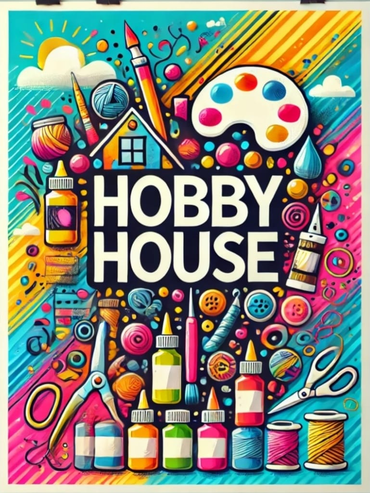

The Hobby House is a creative venture showcased at the Market Fest organized by Chintamanrao College of Commerce, Sangli. This business specializes in handmade and personalized art and craft items, including:
- Customized pouches and tote bags.
- Hand-painted jars and T-shirts.
- Personalized keychains, bookmarks, and magnets.
- With the tagline "Where Creativity Meets Thoughtfulness", The Hobby House offers unique, handcrafted products that blend utility with artistic flair. It's a perfect stop for gifting and collecting creative treasures.